Kunohe
Kunohe · Iwate
Kunohe
Highlighted on the Iwate map.
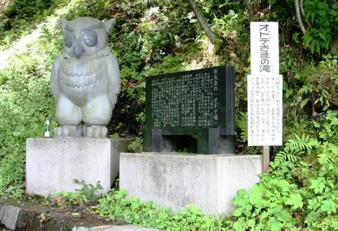
Stay
ふるさとの館
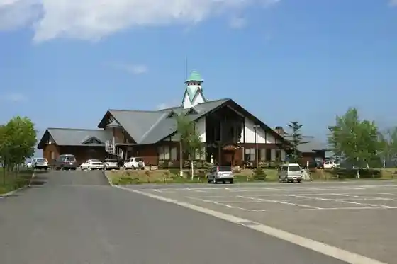
Furusato no Yakata
Lodge next to the village ski area in Kunohe, Iwate.
Dining
ジェラテリアなかいち
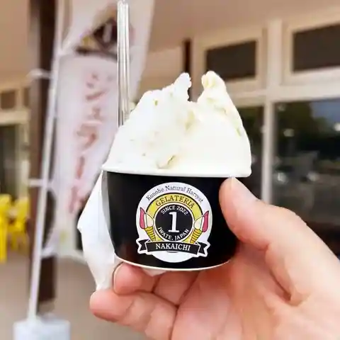
Jierateria Nakaichi
Gelato and ice-cream shop in Kunohe, Iwate.
なかつる
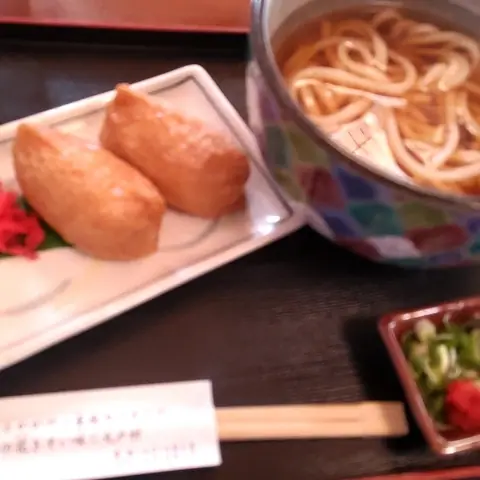
Nakatsuru
Shokudo diner in Kunohe, Iwate.
でんでん亭
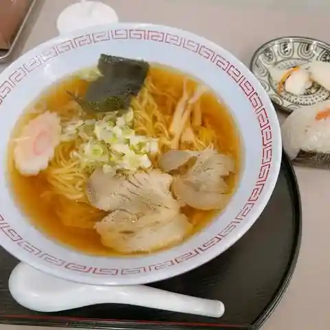
Denden Tei
Shokudo diner in Kunohe, Iwate.
陣羽織
Jinbaori
Shokudo diner in Kunohe, Iwate.
福助寿司
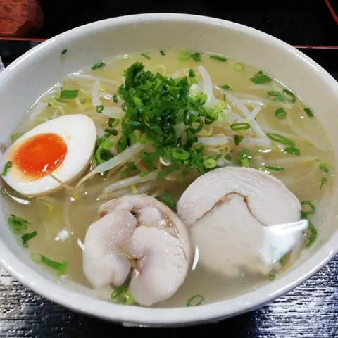
Fukusuke Sushi
Sushi restaurant in Kunohe, Iwate.
まかない屋Cafe Mogumogu
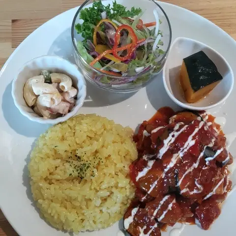
Makanai Ya Cafe Mogumogu
Café in Kunohe, Iwate.
おりつめ工房
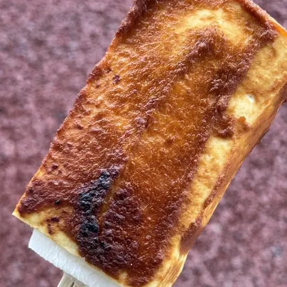
Oritsume Koubou
Deli in Kunohe, Iwate.
オドデ館食堂
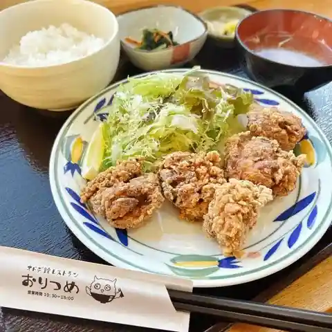
Odode Kan Shokudou
Shokudo diner in Kunohe, Iwate.
道の駅おりつめ
Michi No Eki Oritsume
Roadside-station eatery in Kunohe, Iwate.
ロッジ 西山荘
Rojji Nishiyama Sou
Shokudo diner in Kunohe, Iwate.
居酒屋四郎
Izakaya Shirou
Izakaya in Kunohe, Iwate.
小笠原菓子舗 本店
Ogasawara Kashi Ho Honten
Cake shop in Kunohe, Iwate.
高松魚店
Takamatsu Sakana Mise
Bento shop in Kunohe, Iwate.
アムール
Amuuru
Cake shop in Kunohe, Iwate.
Sights
Machi no Eki Masazane-kan
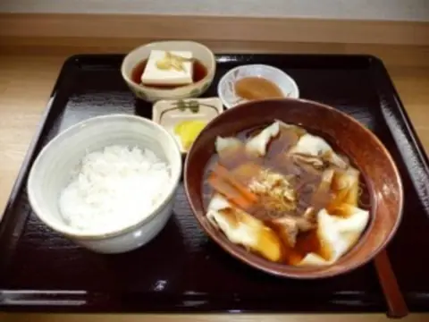
Masazane-kan, a town station, opened in July 2011.
Nanbu Kakke (Soba Kakke)
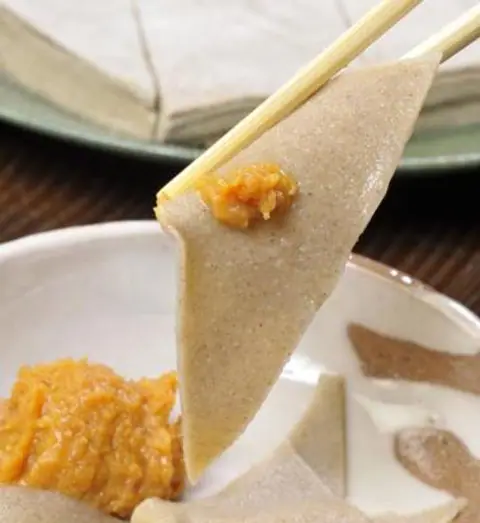
"Nanbu Kakke" is a local dish that has been passed down from ancient times in the village of Kunohe in the southern part of Iwate, a soba restaurant.
Amacha (Sweet Hydrangea Tea)
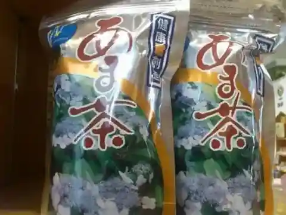
Although it is said to be 200 times sweeter than sugar, it is calorie-free and has beauty and health benefits such as suppressing allergies, ulcers, and bad breath, purifying the blood, diuretic, and regulating the intestines.
Yamabundo Wild Grape Juice
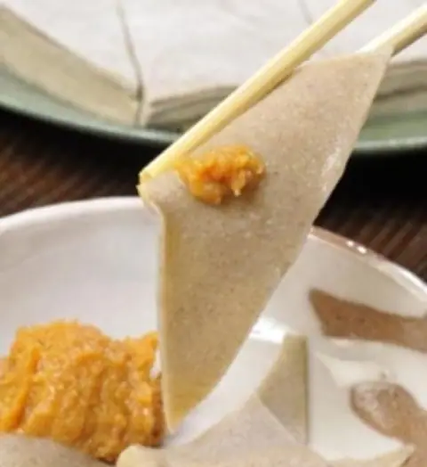
Since ancient times, wild grapes have been said to be good for recovering from fatigue, fortifying the body, and because they contain a lot of iron, they are also good for anemia.
Soba-Making Experience
We are holding a soba making experience at the Furusato Sozokan.
Koropokkurland
A play zone built at the foot of Mt. Orizume.
Orizume Five Falls
There are five waterfalls flowing halfway up the Kunohe village side of Mt.
Pocket Park Fureai Plaza
It is divided into a relaxing space with benches, an outdoor stage, and play equipment, and a parking space with a bus waiting room and restrooms.
Toiryosawa Skunk Cabbage Park
Along the clear stream of the stream, skunk cabbage and Japanese staghorn cabbage bloom with pretty flowers, and there is a promenade where you can observe the flowers up close.
Furusato Sozokan
The village's former wealthy farmer's private house, built in the Taisho era, was relocated and rebuilt.
Himebotaru Firefly Habitat on Mt. Orizume
The area near the summit of Mt. Oritsume has abundant spring water and a Quercus forest, making it one of the largest habitats for fireflies in Japan.